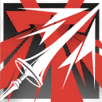

冲锋手 Charger
在明日方舟（Arknights）中，冲锋手（Charger）是先锋职业的其中一个职业分支。冲锋手干员普遍使用骑枪、戟、长矛等长柄冲击武器进行作战，他们具有的高机动性和侵略性使得他们总是可以在战斗的开始迅速抵达战场的关键位置，打开战斗局面，为后续部队的进攻创造条件。
冲锋手通过击杀或者重伤敌人来得到费用点数，为队伍提供更多的资源和攻势支援，他们的高击杀效率使得队伍能够在战斗初期迅速积累费用，保持持续的作战能力。
冲锋手特性表
| 先锋等级 | 特性 |
| 3rd | 身先士卒、陷阵冲锋 |
| 7th | 迅捷打击 |
| 10th | 枪出奇险 |
| 15th | 高效冲击 |
| 18th | 陷阵如风 |
3级：身先士卒 Lead by example
作为一名冲锋手，你获得以下特性：
贯敌刺枪。你选择一把具有触及和双手属性的军用近战武器（通常是骑枪、戟或长矛等长柄武器），然后获得其精通。你持用所选武器攻击先攻低于你的敌人时，若在攻击检定的D20中掷出19或20即可造成重击。
战术机动。你在战斗中使用近战武器攻击将一名敌人的生命值降至0，或执行了撤离动作时，你获得一枚费用骰。
此外，你的基础战技被替换为战技：迅捷打击。

|
迅捷打击丨Swift Strike附赠动作 消耗 1 技力
|
 本回合结束
本回合结束你可以附赠动作并消耗1点技力来发动此战技。直到本回合结束前：你执行攻击动作时，可以额外发动一次攻击。
3级：陷阵冲锋 Charge into battle
你疾行如风，总是可以迅速抵达战场的关键位置。在每场战斗你的首个回合，你的移动速度增加10尺，直到回合结束。
战斗中，当你在一回合内直线移动了至少30尺，则你直到你的回合结束前，所进行的武器攻击都会造成额外的1d6穿刺伤害。15级起，该额外伤害变为1d10。
7级：骑枪突击 Lance Assault
你习得战技：骑枪刺击。
|

|
骑枪突击丨Lance Assault附赠动作 消耗 1 技力
|
你可以附赠动作并消耗1点技力来发动此战技。直到本回合结束前：你的移动速度增加30尺，且不会被借机攻击；你执行攻击动作时，可以额外发动一次攻击。
10级：枪出奇险 Lance Master
你懂得如何最大化利用你的武器和你的机动性。你获得以下效果：
哨卫枪兵Lance Sentinel。当若有生物在你的触及范围内主动移动了至少5尺，即便未离开你的触及范围也能引发你的借机攻击。
战场机动Battlefield Maneuver。当你持用长柄武器进行攻击时，若命中了一名生物，则本回合剩下的时间你的移动不会引起对方的借机攻击。
15级：高效冲击 High Impact Assault
你持用长柄武器攻击先攻低于你的敌人时，若在攻击检定的D20中掷出18-20时即可造成重击。
18级：陷阵如风 Charging Gale
你拥有无与伦比的战场机动力，可以在敌阵中来回穿插。
每回合仅一次，若你持用长柄武器攻击造成了一次重击，或将一个生物的生命值降低至0时，你可以立即移动等同你移动速度的距离而不引发借机攻击，并且对另一个目标再发动一次额外的近战武器攻击。